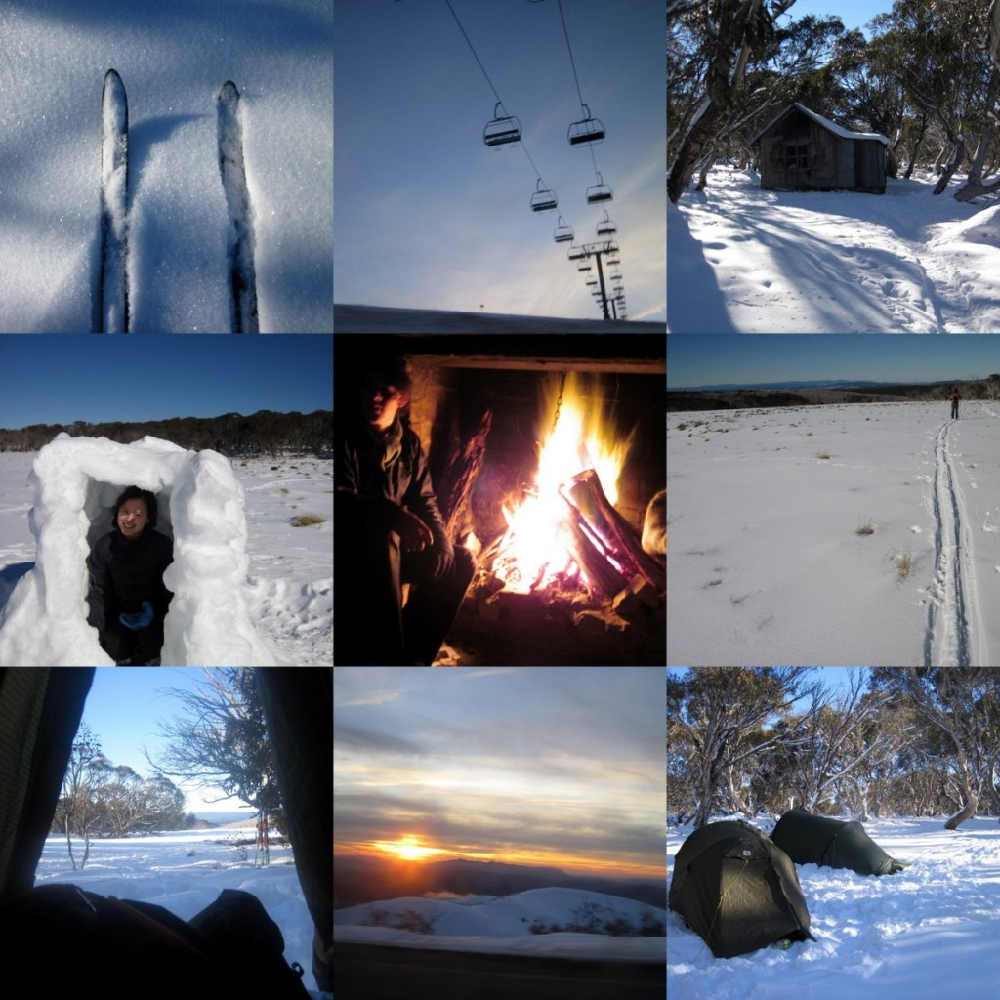

Getting close to nature, snow and all – sounded like a good idea. Also sounded like something interesting and fun to do, you know, cross country skiing, camping in the snow. As someone who grew up in a tropical country, sleeping outdoors in -7 degree weather was something I never thought I’d do. But I was kitted out properly, so after the first night of pitching a tent in the snow and in the dark, awoke to some truly spectacular snow covered country with not a soul in sight, except for our tents. Definitely worth it. Snow was gorgeous and sparkly but felt like fire on the body. Cold is still cold. I was really glad to get home, where clothing doesn’t freeze solid if left outdoors and hot showers feel like the most friendly water ever. Deeper appreciation for everything after spending a weekend when your sole concern is to feed yourself and not freeze.
© 2012 admin

Sleeping snow
Brrr… winter down here in the Southern Hemisphere. Been needing to get out for some adventuring, so I hooked up with the mountaineering club for snow camping.
Enjoy the pics! Snow! Snow forts! Fireplaces! Ski lifts (didn’t use them)! Sunset!
Big love,
Shi.